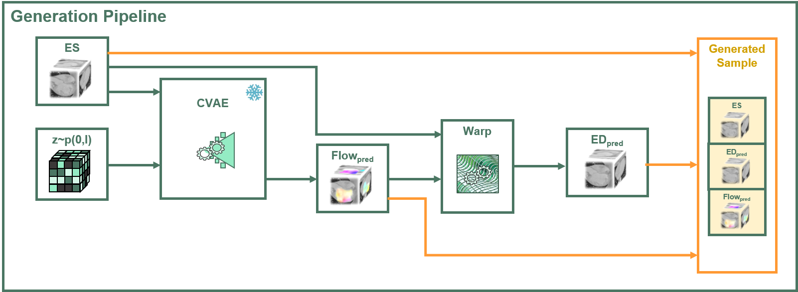

Accurate motion estimation in cardiac computed tomography (CT) imaging is critical for assessing cardiac function and surgical planning. Data-driven methods have become the standard approach for dense motion estimation, but they rely on vast amounts of labeled data with dense ground-truth (GT) motion annotations, which are often unfeasible to obtain.
To address this limitation, we present a novel approach that synthesizes realistically looking pairs of cardiac CT frames enriched with dense 3D flow field annotations.
Our method leverages a conditional Variational Autoencoder (CVAE), which incorporates a novel multi-scale feature conditioning mechanism and is trained to generate 3D flow fields conditioned on a single CT frame. By applying the generated flow field to warp the given frame, we create pairs of frames that simulate realistic myocardium deformations across the cardiac cycle.
These pairs serve as fully annotated data samples, providing optical flow GT annotations.
Our data generation pipeline could enable the training and validation of more complex and accurate myocardium motion models, allowing for substantially reducing reliance on manual annotations.
The CVAE pipeline generates 3D flow fields conditioned on real cardiac CT frames. These flow fields warp systole frames into diastole frames, forming realistic annotated pairs of deformed heart images.

Estimated flow based on known methods serve as ground truth annotations for the CVAE.
The following table showcases examples of the generated heart animations alongside their
corresponding ground truth data.
For each row, you will see a generated animation (systole to diastole transformation), the CVAE ground truth
(GT), the original CT scan, and visualizations of both the predicted and ground truth flow fields.
This allows for a clear comparison between the model's predictions and the actual deformations captured in
the original data.
The architecture consists of several key components collaborating to produce these flow fields from a single conditioned CT frame.
The latent space was explored by conducting a grid search across different latent variables, visualizing the corresponding generated flow fields. The latent space appears continuous, with different deformations generated for the same conditioned frame. The deformed frames appear anatomically feasible. This exploration is visualized below.